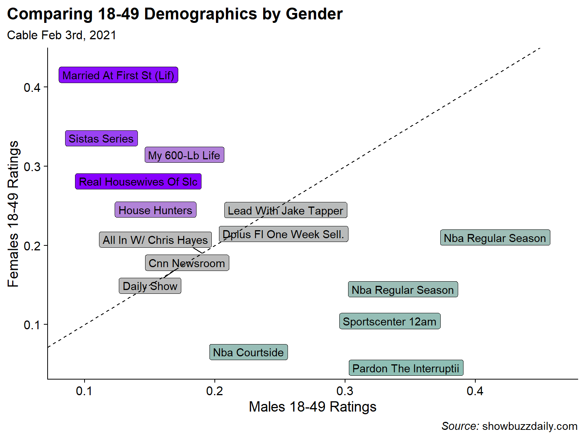
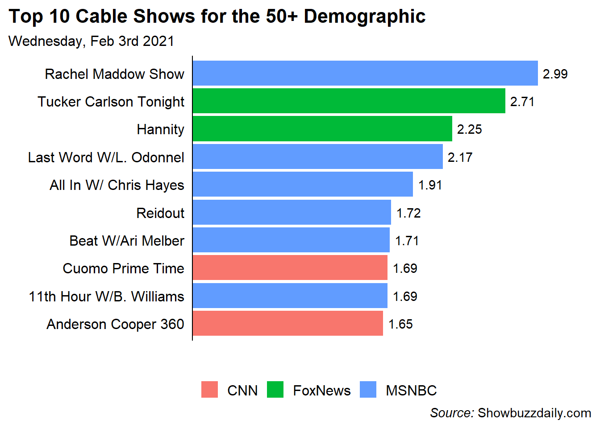
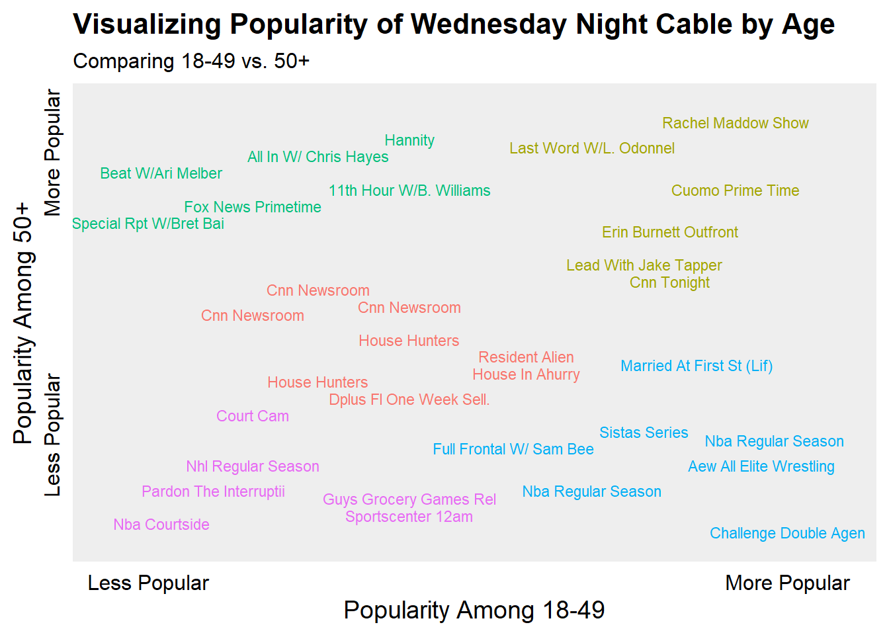

Analysis of Cable Ratings
The decimals in the table for cable ratings refer to the percent of the population watching the show. For instance the p_18_49 field’s value of 0.54 means that 0.54% of the US 18-49 population watched The Challenge on February 3rd.
The Most Popular Shows on Wednesday Night Overall 18-49 and By Gender
The first question is what are the most popular shows for the 18-49 demographic for combined genders and broken apart by gender. These types of combined plots uses the patchwork package to combine the three ggplots into a single plot using a common legend.
##Create Fixed Color Palette For Networks
cols <- scales::hue_pal()(n_distinct(ratings_clean$network))
names(cols) <- levels(ratings_clean$network)
##Top Show By the Key Demo (By Male, By Female)
key_all <- ratings_clean %>%
slice_max(p_18_49, n = 10) %>%
ggplot(aes(x = fct_reorder(telecast, p_18_49), y = p_18_49, fill = network)) +
geom_col() +
geom_text(aes(label = p_18_49 %>% round(2)), nudge_y = 0.015) +
scale_y_continuous(expand = expansion(mult = c(0, .1))) +
scale_fill_manual(values = cols) +
labs(x = "", title = "All Genders", y = '', fill = '') +
coord_flip() +
cowplot::theme_cowplot() +
theme(
axis.text.x = element_blank(),
axis.ticks = element_blank(),
axis.line.x = element_blank(),
plot.title.position = 'plot'
)
key_male <- ratings_clean %>%
slice_max(m_18_49, n = 5) %>%
ggplot(aes(x = fct_reorder(telecast, m_18_49), y = m_18_49, fill = network)) +
geom_col() +
geom_text(aes(label = m_18_49 %>% round(2)), nudge_y = .045) +
scale_y_continuous(expand = expansion(mult = c(0, .1))) +
scale_fill_manual(values = cols, guide = F) +
labs(x = "", title = "Male", y = '') +
coord_flip() +
cowplot::theme_cowplot() +
theme(
axis.text.x = element_blank(),
axis.ticks = element_blank(),
axis.line.x = element_blank(),
plot.title.position = 'plot'
)
key_female <- ratings_clean %>%
slice_max(f_18_49, n = 5) %>%
ggplot(aes(x = fct_reorder(telecast, f_18_49), y = f_18_49, fill = network)) +
geom_col() +
geom_text(aes(label = f_18_49 %>% round(2)), nudge_y = .065) +
scale_y_continuous(expand = expansion(mult = c(0, .1))) +
scale_fill_manual(values = cols, guide = F) +
labs(x = "", title = "Female", y = '') +
coord_flip() +
cowplot::theme_cowplot() +
theme(
axis.text.x = element_blank(),
axis.ticks = element_blank(),
axis.line.x = element_blank(),
plot.title.position = 'plot'
)
key_all / (key_male | key_female) +
plot_layout(guides = "collect") +
plot_annotation(
title = "**Wednesday Night Cable Ratings (Feb 3rd, 2021)**",
caption = "*Source:* Showbuzzdaily.com"
) & theme(legend.position = 'bottom',
plot.title = ggtext::element_markdown(size = 14),
plot.caption = ggtext::element_markdown())
From the chart its clear that the Challenge is fairly dominant in the 18-49 Demographic with 0.21% (or 1.63x) higher than the 2nd highest show. Although while the Challenge is popular with both genders its the most popular show among 18-49 Females but only 3rd for 18-49 Males after a NBA game and AEW Professional Wrestling.
Also, because the networks for My 600-lb Life (TLC) and Sistas (BET) weren’t in the overall top 10 I couldn’t figure out how to include them in the legend. If anyone has any ideas, please let me know in the comments.
The Most Male-Dominant, Female Dominant, and Gender-Balanced Shows
From the above chart its clear that some shows skew Male (sports) and some skew Female (reality shows like Married at First Sight, My 600-lb Life, and Real Housewives). But I can look at that more directly by comparing the ratios the Female 18-49 rating to the Male 18-49 rating to determine the gender skew of each show. I break the shows into categories of Male Skewed, Female Skewed, and Balanced (where the Female/Male Ratio is closest to 1).
##Female / Male Ratio for Key Demo
bind_rows(
ratings_clean %>%
mutate(f_m_ratio = f_18_49 / m_18_49) %>%
slice_max(f_m_ratio, n = 5),
ratings_clean %>%
mutate(f_m_ratio = f_18_49 / m_18_49) %>%
slice_min(f_m_ratio, n = 5),
ratings_clean %>%
mutate(f_m_ratio = f_18_49 / m_18_49,
balance = abs(1-f_m_ratio)) %>%
slice_min(balance, n = 5)
) %>%
mutate(balance = f_m_ratio-1) %>%
ggplot(aes(x = m_18_49, y = f_18_49, fill = balance)) +
ggrepel::geom_label_repel(aes(label = telecast)) +
geom_abline(lty = 2) +
scale_fill_gradient2(high = '#8800FF',mid = '#BBBBBB', low = '#02C2AD',
midpoint = 0, guide = F) +
labs(title = "Comparing 18-49 Demographics by Gender",
subtitle = 'Cable Feb 3rd, 2021',
caption = "*Source:* showbuzzdaily.com",
x = "Males 18-49 Ratings",
y = "Females 18-49 Ratings") +
cowplot::theme_cowplot() +
theme(
plot.title.position = 'plot',
plot.caption = ggtext::element_markdown()
)
Sure enough the most Male dominated shows are sport-related with 2 NBA Games, an NBA pre-game show, an episode of Sportscenter, and a sports talking heads show. Female skewed shows are also not surprising with Married at First Sight, Sistas, My 600-lb Life, and Real Housewives of Salt Lake City topping the list. For the balanced category, I did not have much of an expectation but all the programs seems to be News shows or news adjacent like the Daily Show… which I guess makes sense.
Most Popular Shows for the 50+ Demographic
Turning away from the 18-49 demographic I can also look at the most popular shows for the 50+ demographic. Unfortunately, there is not a 50+ gender breakdown so I can only look at the overall.
ratings_clean %>%
slice_max(p_50_plus, n = 10) %>%
ggplot(aes(x = fct_reorder(telecast, p_50_plus), y = p_50_plus, fill = network)) +
geom_col() +
geom_text(aes(label = p_50_plus %>% round(2)), nudge_y = 0.15) +
scale_y_continuous(expand = expansion(mult = c(0, .1))) +
labs(x = "", title = "Top 10 Cable Shows for the 50+ Demographic",
y = '',
subtitle = "Wednesday, Feb 3rd 2021",
caption = "*Source:* Showbuzzdaily.com",
fill = '') +
coord_flip() +
cowplot::theme_cowplot() +
theme(
axis.text.x = element_blank(),
axis.ticks = element_blank(),
axis.line.x = element_blank(),
plot.title.position = 'plot',
plot.caption = ggtext::element_markdown(),
legend.position = 'bottom'
)
Interestingly in the 50+ Demo, ALL of the shows are News shows and they only come from 3 networks. Two on CNN, Two on Fox News, and 6 on MSNBC. Again, didn’t have a ton of expectation but it was surprising to be how homogeneous the 50+ demography was.
The Oldest and Youngest Shows in the Top 50
Similar to the Most Male and Most Female shows in the Top 50 Cable Programs, I’d like to see which shows skew older vs. younger. To do this, I’ll rank order the 18-49 demo and the 50+ demo and plot the ranks against each other. Now there are some massive caveats here in the sense that my data is the Top 50 shows by the 18-49 demo, so its not clear that the 50+ demo is fully represented. Additionally, popularity for each dimension is relative since I don’t know the actual number of people in each demo.
#Rank Order the Shows for the 2 Columns
dt <- ratings_clean %>%
transmute(
telecast,
young_rnk = min_rank(p_18_49),
old_rnk = min_rank(p_50_plus),
)
# Run K-Means Clustering Algorithm
km <- kmeans(dt %>% select(-telecast),
centers = 5, nstart = 10)
#Add the cluster label back to the data
dt2 <- dt %>%
mutate(cluster = km$cluster)
#Plot
ggplot(dt2, aes(x = young_rnk, y = old_rnk, color = factor(cluster))) +
geom_text(aes(label = telecast), size = 3, check_overlap = T) +
scale_color_discrete(guide = F) +
scale_x_continuous(breaks = c(1, 50),
labels = c("Less Popular", "More Popular")) +
scale_y_continuous(breaks = c(20, 54),
labels = c("Less Popular", "More Popular")) +
coord_cartesian(xlim = c(-2, 54), ylim = c(0, 52)) +
labs(x = "Popularity Among 18-49",
y = "Popularity Among 50+",
title = "Visualizing Popularity of Wednesday Night Cable by Age",
subtitle = "Comparing 18-49 vs. 50+") +
cowplot::theme_cowplot() +
theme(
axis.ticks = element_blank(),
axis.line = element_blank(),
axis.text.y = element_text(angle = 90),
panel.background = element_rect(fill = '#EEEEEE')
)